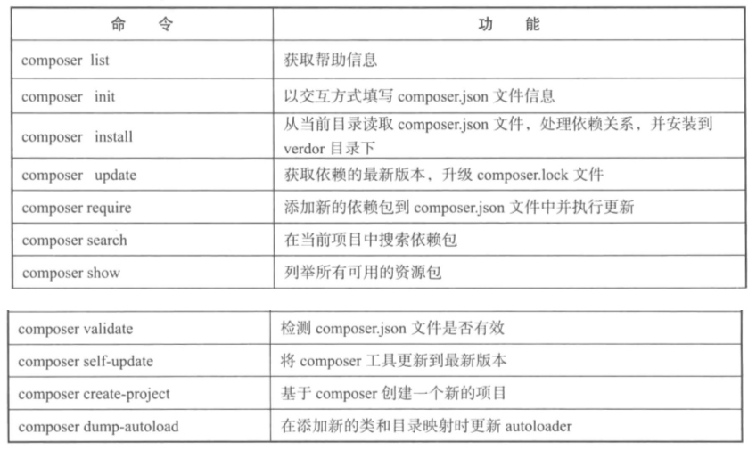

laravel框架学习之组件化
0 条评论组件化开发
组件话开发的目的就是能够使用已有的程序模块构建项目，甚至可以快速更换项目中的相应模块而不需要系统中其他部分的代码，这就需要所有代码按照一定的规范和接口来实现
PSR标准
主要有PSR-0和PSR-4，这两个文档主要制定了Autoloader标准即代码自动加载标准
composer
composer是一个组件管理工具，具体安装可参照官网
自动加载
四种文件自动加载的规范形式,这四种形式本质上是定义了一个命名空间到实际文件的引蛇的映射关系，通过这个映射关系，可以利用命名空间类精确定位到相应文件的具体路径，进而实现自动加载功能
- PSR-0
1 | { |
上述配置文件使用PSR-0定义了映射关系，即命名空间App\对应目录app/,当使用$user=new \App\User()语句实例化App\User类时，PSR-0规范下，需要创建一个app/App/User.php,则该文件需要包含App\User类，
- PSR-4
1 | { |
上述配置文件使用PSR-4定义了映射关系，即命名空间App\对应目录app/,当使用$user=new \App\User()语句实例化App\User类时，PSR-4规范下，需要创建一个app/User.php,则该文件需要包含App\User类，与上的区别是无需新建命名空间的目录
- classmap
1
2
3
4
5{
"autoload":{
"classmap":["database"]
}
}
扫描指定目录中所有的.php和.inc文件，并加载到autoload_classmap.php文件中，在该文件中实现一个具体类与文件映射的关联数组
- files
1 | { |
对于在每次程序执行时都需要载入的文件，可以通过files规范实现自动加载，经常使用的函数库文件就可以使用这种载入模式
常见的命令
